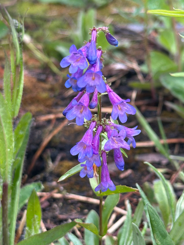
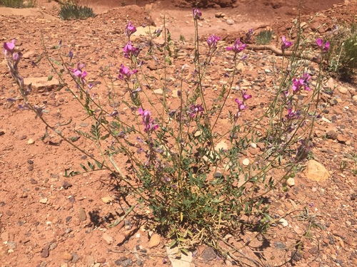
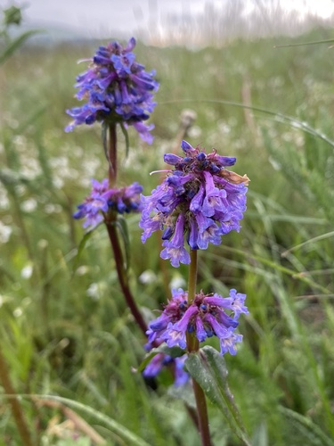
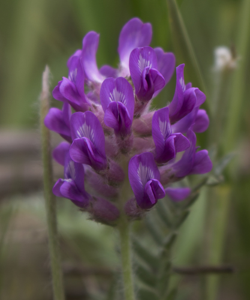

Hoplitis hypocrita
Hoplitis hypocrita native bee
Small mason bees, western and northern.
13 documented plant relationships.
sips nectar at

Alberta PenstemonPenstemon albertinus Leslie Seaton, some rights reserved (CC BY)") BalsamrootBalsamorhiza sagittataBlanketflowerGaillardia aristataEarly Yellow OxytropisOxytropis sericeaFuzzy-tongue PenstemonPenstemon eriantherus
BalsamrootBalsamorhiza sagittataBlanketflowerGaillardia aristataEarly Yellow OxytropisOxytropis sericeaFuzzy-tongue PenstemonPenstemon eriantherus
Northern HedysarumHedysarum boreale David Anderson, some rights reserved (CC BY), uploaded by David Anderson") Silky LupineLupinus sericeus
Silky LupineLupinus sericeus
Slender Blue BeardtonguePenstemon procerus Andrea Romero, some rights reserved (CC BY), uploaded by Andrea Romero") Wild VetchVicia americana
Wild VetchVicia americana J Brew, some rights reserved (CC BY-SA), uploaded by J Brew") Yellow BeardtonguePenstemon confertus
Yellow BeardtonguePenstemon confertus Matt Lavin, some rights reserved (CC BY-SA)") Yellow PucoonLithospermum ruderale
Yellow PucoonLithospermum ruderale
Yellow-flowered LocoweedOxytropis campestris